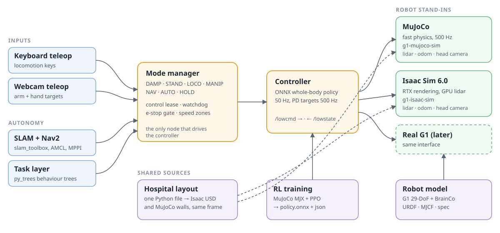
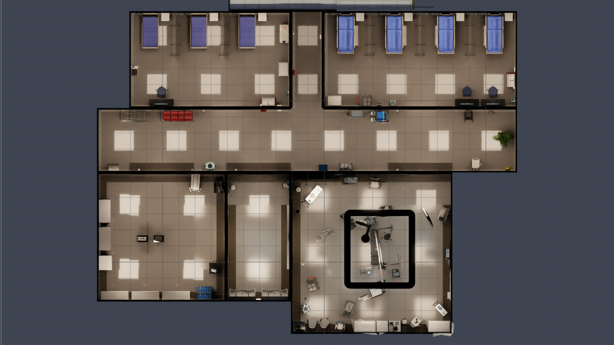
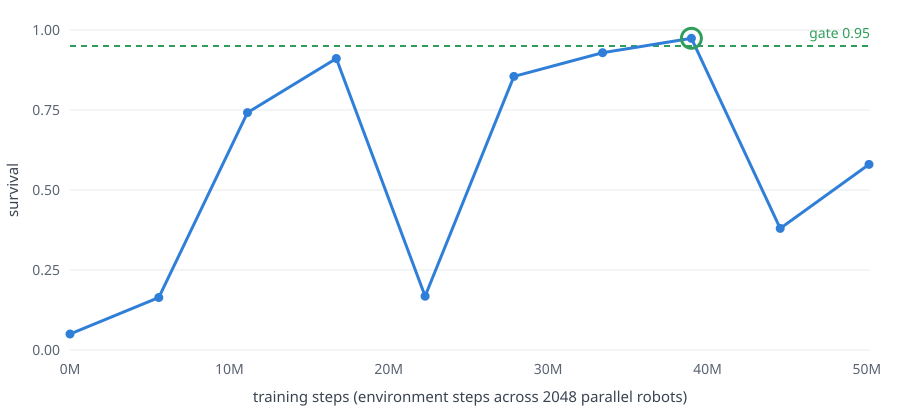

- Test mapping and navigation in a complete hospital.
- Train controllers in MuJoCo and test them in Isaac Sim.
- Develop teleoperation and safety functions.
- Build and test robot tasks.
- Record synchronised sensor data with exact ground truth.
WardZero is an open platform to build and test robot solutions for hospitals. It gives a complete simulated hospital, two simulators, a safety layer and navigation. Users can bring their own robot, controller or task.
The simulated hospital has a surgical wing. The wing has corridors, pre-operative bays, a recovery ward, a sterile store, a scrub room and an operating theatre.
All parts use the low-level interface of the real robot. The controller sends motor targets on
/lowcmd at 500 Hz. It reads the joint states on /lowstate. Because of this, the same
software runs in MuJoCo, in Isaac Sim and on the real robot.
The reference robot is a Unitree G1 humanoid with 29 degrees of freedom and two BrainCo Revo2 hands. The
repositories with the prefix hospital-sim- contain no robot-specific code. A different robot
supplies its own model, simulator bindings and controller.
All tests of WardZero used simulation only. No test of the transfer from simulation to a real robot (sim-to-real) is complete yet. WardZero is in development.

/lowcmd and receives /lowstate, as on the real robot. The simulators also publish the lidar scan, the odometry and the head camera.The hospital is the NVIDIA Isaac Sim hospital building. A generated surgical wing connects to its south-east door. The wing uses the operating theatre and the props of NVIDIA Isaac for Healthcare and Lightwheel SimReady.
A generator makes the scene from the layout file. A build check stops the build if furniture blocks a door. It also stops the build if two props overlap or if a prop is outside its room. The floor has one level. The corridors are 2 m and 4 m wide. The doors have 2 m of clear width.
The scene uses a reduced copy of the assets, so it can run on an 8 GB graphics card. The light levels are calibrated, so that the white walls do not show as plain white.

Two simulators replace the robot. They use the same low-level interface. All the software above the controller is the same in the two simulators.
MuJoCo gives fast physics. The ROS 2 simulator node steps it at 500 Hz, and MuJoCo MJX trains the controller. Isaac Sim gives realistic rendering, a lidar and a head camera. Use it to test navigation and perception with realistic sensor data.
PPO trains the whole-body controller in MuJoCo MJX. 2048 robots train in parallel on one RTX 3070. The curriculum has three stages. Stage A teaches the robot to stand. Stage B teaches it to walk with arm targets. Stage C teaches it to follow full-body motions.
A teacher policy with privileged data trains a student policy. The student uses only the sensors of the real robot. The controller loads the student as an ONNX file. Each stage has gates. The training is not stable, so the trainer keeps the checkpoint that passes the gates.
Stage A1 is complete. The survival increased from 0.05 to 0.97 in 39 million steps. The stage took approximately one hour.

Survival in stage A1 against training steps. The green ring shows the checkpoint that passed the gate.
The mode manager has seven modes: DAMP, STAND, LOCO, MANIP, NAV, AUTO and HOLD. HOLD stops the robot in its position. DAMP removes the power from the motors.
All input sources send requests to the mode manager, and the mode manager makes the decision. A control lease sets which source has control. A watchdog sets HOLD if the interface signal stops. A hardware emergency stop has priority over all inputs. Speed zones on the map set the maximum speed.
Webcam teleoperation controls the arms and the hands. The operator sits in front of a webcam. MediaPipe tracks the operator, and a fork of xr_teleoperate calculates the arm and finger positions. The operator does not need a VR headset.
Navigation uses standard ROS 2 packages. slam_toolbox makes the map. AMCL finds the position of the robot on the map. Nav2 with the MPPI controller plans the path and drives the robot.
The master repository, hospital-sim, contains the interface contract, the environment script and the list of component repositories. It checks out the component repositories in one folder.
| Repository | Contents |
|---|---|
| hospital-sim | Master repository: interface contract, environment script, component list |
| hospital-sim-env | Isaac Sim hospital and surgical wing, layout generator, surgical instruments |
| g1-brainco-description | Reference robot model: URDF, MJCF, meshes, robot specification |
| g1-mujoco-sim | MuJoCo version of the hospital, made from the same layout |
| g1-isaac-sim | Robot in the Isaac hospital: physics layer, lidar, cameras, DDS and ROS 2 bridge |
| g1-whole-body-rl | Controller training in MuJoCo MJX and ONNX export |
| hospital-sim-ros2 | ROS 2 Humble packages: controller, mode manager, teleoperation, simulator node, navigation, tasks, bringup |
| g1-webcam-teleop | Webcam teleoperation of the arms and the hands |
| done | Hospital and surgical wing in Isaac Sim and MuJoCo, from one layout, in one world frame |
| done | Low-level interface of the real robot in the two simulators, with lidar, odometry and head camera |
| done | Mode manager with control lease, watchdog, emergency-stop gate and speed zones |
| done | Keyboard and webcam teleoperation |
| done | Mapping and navigation |
| partial | Controller: the training of stage A1 (stand) is complete. Distillation, export, walking and motion tracking are next. |
| next | Simulated patient personas: train human characters that act as patients in the simulated hospital. Researchers can then study robot-human interaction in simulation, before tests with people. |
| next | Data from the simulators to train and test learned world models |
| next | Sim-to-real transfer and tests on a real robot. All the results on this page come from simulation only. |
@software{bangalorekumaraswamy2026hospitalsim,
author = {Bangalore Kumaraswamy, Rakshith},
title = {hospital-sim: Master repository of a humanoid robot stack in a simulated hospital},
year = {2026},
url = {https://github.com/Bkrakshith/hospital-sim},
license = {Apache-2.0}
}
WardZero is in development. It is research software. All tests of WardZero used simulation only. No tests on a real robot and no tests of the transfer from simulation to a real robot are complete.
WardZero is not a medical device. It is not for patient care or for a clinical procedure. It is not for the control of a real robot near people without a separate safety analysis, tests and approvals by the user.
The author supplies the software, models, data and this page "as is", with no warranty of any kind, express or implied. This includes no warranty of fitness for a purpose, safety, accuracy or non-infringement. Users use WardZero at their own risk. Users are responsible for all the work that they do with it.
To the maximum extent that the law permits, Rakshith Bangalore Kumaraswamy and the contributors are not liable for any claim, damage, injury, loss or other liability that comes from WardZero or from its use. This applies to direct, indirect, incidental and consequential damage. Refer also to sections 7 and 8 of the Apache License 2.0.